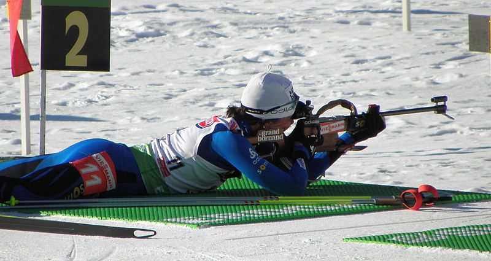

A biathlon competition consists of a race in which contestants ski through a cross-country trail system whose total distance is divided into either two or four shooting rounds, half in prone position, the other half standing. Depending on the shooting performance, extra distance or time is added to the contestant's total running distance/time. The contestant with the shortest total time wins.
For each shooting round, the biathlete must hit five targets and receives a penalty for each missed target, which varies according to the competition rules, as follows:[6]
Skiing around a 150-metre (490 ft) penalty loop—typically taking 20–30 seconds for elite biathletes to complete, depending on weather and snow conditions.
Adding one minute to the skier's total time.
Use of an extra cartridge (placed at the shooting range) to hit the target; only three such extras are available for each round, and a penalty loop must be done for each target left standing.
In order to keep track of the contestants' progress and relative standing throughout a race, split times (intermediate times) are taken at several points along the skiing track and upon finishing each shooting round. The large display screens commonly set up at biathlon arenas, as well as the information graphics shown as part of the TV picture, will typically list the split time of the fastest contestant at each intermediate point and the times and time differences to the closest runners-up.
